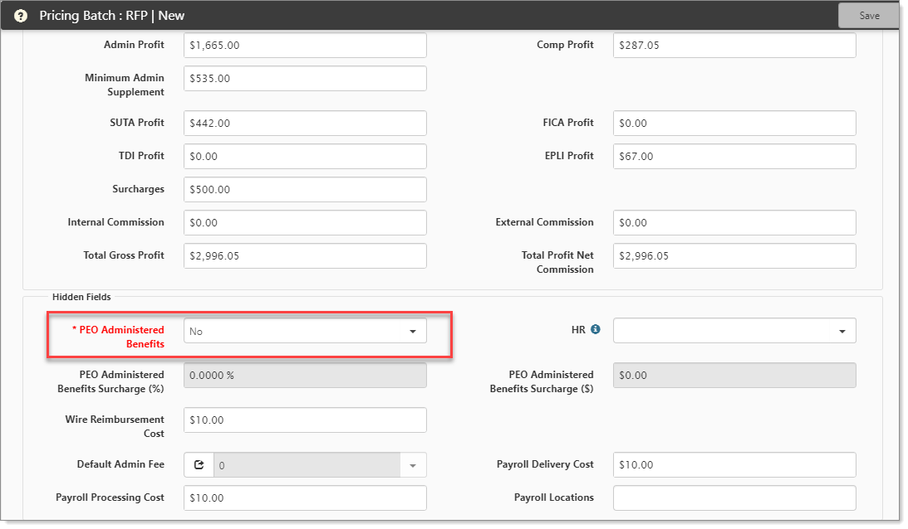
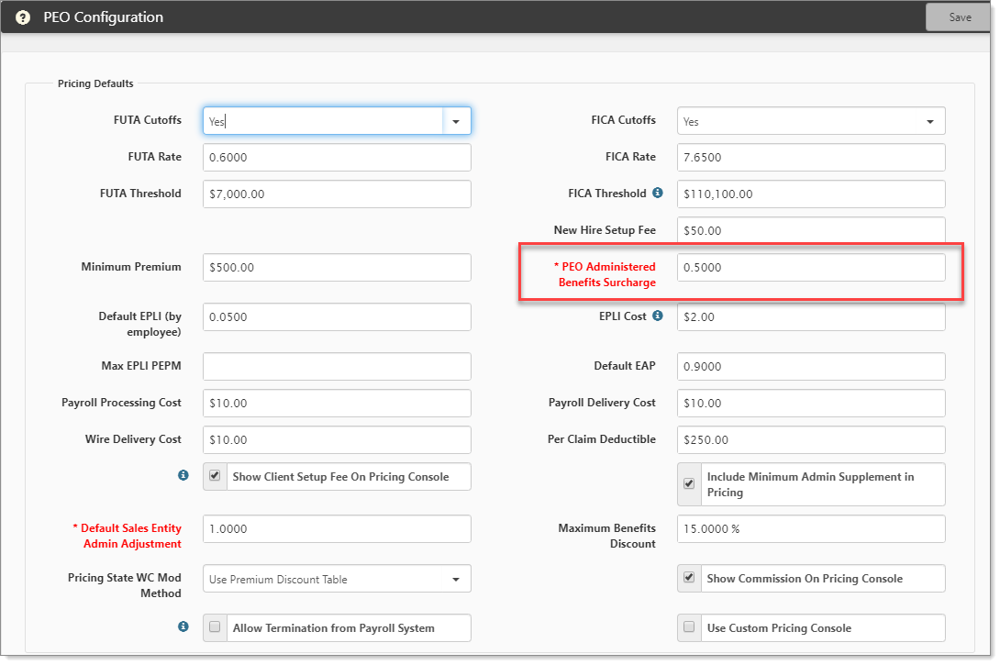

In ClientSpace PEO, the PEO Administered Benefits field indicates the PEO is handling the benefits administration for their client. But what does this mean from a pricing perspective, and what is the effect on the rest of the system?
So what does it do?
On the Pricing Batch, if PEO Administered Benefits field (luPEOAdministeredBenefits) is set to Yes, then the SetDefaults() rule pulls the surcharge percent from the PEO Administered Benefits Surcharge (PEOAdministeredBenefitsSurcharge) field on the PEO Configuration form. This is then used to set the Pricing Batch Surcharge Percent (SurchargePercent) and Surcharge Amount (SurchargeAmount) fields. If set to No, the PEO Administered Benefits Surcharge is ignored.
The luPEOAdministeredBenefits is on the Pricing Batch. If you set this to Yes, then the PEO Administered Benefits Surcharge on the PEO Configuration form is applicable.
How to find:
Go to Pricing (from the modules bar).
Select and open a workspace.
The Pricing Console opens.
From Batch, click  (Jump).
(Jump).
The Pricing Batch form opens.
In the Hidden Fields fieldset, note the setting for PEO Administered Benefits.
Yes: The SetDefaults() rule pulls the surcharge percent from the PEO Administered Benefits Surcharge (PEOAdministeredBenefitsSurcharge) field on the PEO Configuration form.
No: Ignore the value in the PEO Administered Benefits Surcharge field on the PEO Configuration form.

Where is the value set for benefits surcharge?
On the Pricing Batch, if you have PEO Administered Benefits set to Yes, then you may want to view the actual surcharge value.
Go to System Admin  > Administrative Data > PEO Configuration.
> Administrative Data > PEO Configuration.
The PEO Configuration form opens.
Locate the PEO Administered Benefits Surcharge field.

Both Surcharge Percent and Surcharge Amount are used in other things, such as Pricing Views and Client Master validation. These include the following:
peo_vwPricingInfo_All - Reporting View
peo_vwPricingInfo - Reporting View
peo_pricingbatch_u_base_pricing_info - Sets the Batch Benefits Surcharge Amount, among other things, based on calculation.
peo_clientmaster_s_adminpercentageviolation
For more information about Pricing and how surcharges work, log an Extranet case.
Topics in this section